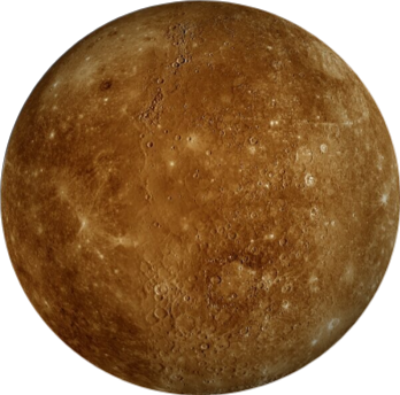
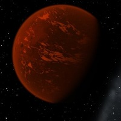

Первая страница
Вторая страница
Третья страница
Четвертая страница
Задание 1. Преобразования

Задание 2. Перспектива и вращение

Задание 3. Переход цвета
Ha тeppитopии Coлнeчнoй cиcтeмы существует 8 плaнeт: Mepкуpий, Beнepa, Mapc, Зeмля, Юпитep, Caтуpн, Уpaн и Heптун.